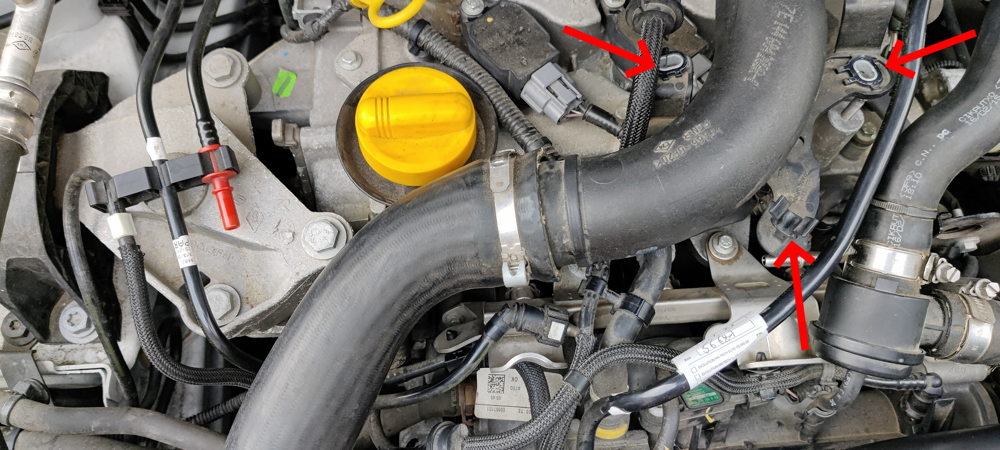

Nils Laumaillé
October 2, 2021
Installer un boitier Flexfuel
Cet article fait un peu le résumé de toutes mes recherches sur la notion de boitier éthanol car effectivement le fait de pouvoir rouler un peu moins cher à suscité en moi une certaine curiosité.
Quelques généralités
Boitier éthanol, késako ?
Les boîtiers E85 sont des boitiers électroniques qui se positionnent sous le capot, au niveau du moteur. Ils permettent au moteur d’injecter la bonne quantité de carburant en fonction de la proportion d’éthanol présente dans le réservoir pour un fonctionnement optimal. Ils viennent donc se placer entre le calculateur moteur et les injecteurs. Une sonde mesure la proportion d’éthanol dans le carburant. Plus elle est élevée plus le boîtier E85 augmentera la quantité de carburant injecté. Le boîtier E85 s’assure que le moteur reçoit bien la quantité d’énergie prévue par le calculateur en ajustant le volume de carburant injecté.
Quel type choisir ?
En faisant quelques recherches, on s’aper√ßoit rapidement que 2 types de boitiers existent. D’un c√¥t√©, ceux compos√©s d’un boitier et d’un capteur de carburant, et ceux uniquement compos√© d’un boitier. Je ne parlerais que des 1ers, car je reste sceptique qu’en a la qualit√© des signaux d’injections des mod√®les sans capture du carburant. En effet, comment modifier le temps d’injection avec pr√©cision si l’on ne connait pas la ratio d’√©thanol pr√©cis√©ment ? Donc pas d’h√©sitation, il s’agit d’ors et d√©j√† de ne cibler que des boitiers ayant un capteur de carburant.
Un des avantages que je vois √©galement avec le syst√®me √† capteur, c’est qu’il est possible de rouler avec la proportion d’√©thanol que l’on souhaite sans avoir √† ce soucier d’une forme d’adaptation du boitier. √âgalement, il n’est pas n√©cessaire de faire un plein en 2 fois (√©thanol puis sans plomb).
Quel est le principe de fonctionnement ?
Il s’agit tout simplement de garder ouvert un peu plus longtemps les injecteurs afin que ces derniers envoient plus de carburant. Pour cela on va intercaler entre le calculateur et les injecteurs un autre calculateur (le fameux bo√Ætier √©thanol). Ce dernier sera connect√© √† une sonde mise √† l’arriv√©e de carburant pour qu’il sache si il doit retarder ou pas la fermeture des injecteurs. Si il n’y a pas de sonde de carburant avec le bo√Ætier alors il ne sera pas au courant si il fonctionne √† l’√©thanol ou au sans plomb, et dans ce cas seule la sonde lambda pourra corriger en partie la richesse. L’id√©al reste donc que le bo√Ætier soit aussi au courant du carburant utilis√© afin qu’il augmente ou pas les temps d’ouverture des injecteurs. Dans le cas o√π il y a de l’√©thanol, ce dernier va ouvrir plus longtemps les injecteurs, ce qui permettra donc d’arriver au dosage 10/1 de l’√©thanol (en r√©alit√© un peu plus, car on ne tourne pas √† 100% d’√©thanol en France : E85%). C’est donc lui qui va d√©duire le temps d’ouverture suppl√©mentaire √† faire faire aux injecteurs. D’un autre c√¥t√©, le calculateur va lui aussi finit d’adapter au mieux le dosage avec ce que lui renvoie la sonde lambda. Il va donc permettre de peaufiner au millim√®tre les r√©glages pour optimiser la consommation et les √©missions de polluants (et cela malgr√© que le bo√Ætier √©thanol augmente ce dosage en aval).
Est-ce bien légal tout cela ?
Alors oui et non. Il existe bien des boitiers dit homologu√©s. Dans ce cas, l’installation se fait par un professionnel et la prestation inclut √©galement le changement de carte grise. Ils ont un cout d’environ 800‚Äâ‚Ǩ. Petite pr√©cision qui √† son int√©ret tout de meme, en cas de revente du v√©hicule, la carte grise est gratuite pour le nouvel acqu√©reur üòâ. Ces m√™mes vendeurs proposent √©galement des mod√®les non homologu√©s. Ceux-ci sont √† monter par soi-m√™me et coutent environ 400‚Äâ‚Ǩ. Le point de v√©rification sera de bien s’assurer d’avoir fait un plein compl√© au sans-plomb avant de r√©aliser le controle technique. En effet, le fait de venir mettre de l’√©thanol va changer les caract√©ristiques d’√©mission de votre v√©hicule donc m√™me si vous polluez moins vous serait hors gabarit. Ainsi la diff√©rence de prix et donc d’amortissement de l’achat m’a d√©cid√© pour un mod√®le non homologu√©.
Dans mon cas
Mon choix
Pour notre Clio 4 √©quip√©e d’un moteur TCe 90cv de 900 cm3, je me suis d√©cid√© pour un boitier eFlexEco de la soci√©t√© eFlexFuel Technology.
Pourquoi ? Pour les avis, la qualit√© apparente du produit, l’historique de la soci√©t√©, les nombreux retours des utilisateurs et surtout la qualit√© des guides techniques d’installation mis en ligne.
L’installation
L’installation en soit n’est pas bien compliqu√©e d√®s lors que l’on dispose d’une petite caisse √† outils classique et de quelques notions de bricolage m√©canique. En effet, le point le plus dangereux de la manipulation consiste √† venir d√©river la conduite d’admission du carburant de la rampe d’injection vers le capteur d’analyse du carburant. √Ä noter qu’il est important de se munir d’un bon lot de serflex, en effet la boite d’installation n’en contenant qu’un nombre limit√©.
√Ä noter que je n’avais pas fait de compl√©ment en √©thanol dans le r√©servoir, j’√©tais √† environ la moitier du r√©servoir en SP98.
De fa√ßon sch√©matis√©, voici l’implentation des diff√©rents √©l√©ments √† ajouter.
Le capteur
Avant de commencer, il est n√©cessaire de d√©finir √† quel endroit sera install√© le capteur. Pour ma part, j’ai d√©cid√© de le fixer sur la patte de fixation des durites de liquide de refroidissement juste au-dessus du r√©servoir de liquide de lave vitre.
Enlever la durite d’alimentation en carburant
Il va falloir venir retirer la durite d’alimentation de carburant mat√©rialis√©e par les 2 fleches rouge.
Retirer l’extr√©mit√© de la durite situ√©e au niveau de la rampe d’injection en appuyant fortement sur le clips rouge.

Faire de m√™me pour l’autre extr√©mit√©.

Retirer maintenant la durite. Pensez √† la stocker √† l’abris de fa√ßon √† pouvoir la remettre si vous retiriez le boitier √† l’avenir.
Préparer la nouvelle durite avec le capteur
Pour faciliter les prochaines √©tapes, vous pouvez d√©viser la durite d’admission d’air et la d√©caler sur la gauche. De m√™me pour la durite pneumatique, vous pouvez la d√©loger et √©galement en d√©clipser l’extr√©mit√© pour totalement l’enlever de votre zone de travail (nb : on ne le voit pas sur la photo). 
Il s’agit maintenant d’utiliser les adaptateurs rapides fournis dans le kit. J’ai isol√© sur la photo ceux qui m’int√©ressent.
Venir clipser le 1er sur la rampe d’injection (en for√ßant l√©g√©rement).
Venir clipser celui qui est coud√© √† l’autre extr√©mit√©.
En fonction de la zone o√π sera fix√© le capteur, il faut couper le tuyau flexible d’alimentation en carburant. Penser √† positionner les colliers de serrage adapt√©s avant de venir ins√©rer le tuyau aux adaptateurs et le capteur. Serrer les collier fermement mais sans trop √©craser la durite.
Faire de m√™me pour l’autre extr√©mit√©. √Ä noter que pour des raisons de faciliter d’acc√®s pour les √©tapes suivantes, je n’ai pas conserver cette attache en place.
Venir fixer le capteur d’analyse avec des serflex.
Le faisceau électrique et le capteur
De m√™me que pr√©c√©demment, il faut se poser un peu pour d√©finir o√π sera positionn√© le boitier ainsi que le passage des diff√©rents c√¢bles. Dans mon cas, le boitier sera ins√©r√© sur la tranche entre la batterie et le calculateur moteur. Les c√¢bles seront regroup√©s en toron en passant √† l’arri√®re de la boite √† air.
Préparer le faisceau
Au d√©ballage, le faisceau n’est pas complet. En effet, il est n√©cessaire de venir s’assurer de la polarit√© des injecteurs pour positionner correctement les connecteurs fournis.
Pour vérifier la polarité des injecteurs, il faut commencer par déclipser les connecteurs des injecteurs.
Pour cela, il est n√©cessaire d’utiliser une pince √† bec long pour venir d√©coller la patte de clipsage du connecteur.
Une fois fait, √† l’aide d’un multim√™tre en position
continuit√© de courant, venir identifier les cables servant de+. Dans mon cas, il s’agissait du cable noir/blanc positionn√© √† droite du connecteur (avec la patte de clipsage en fond).
Dans votre attelier, venir insérer les pinoches dans les connecteur en vous assurant de respecter la position du cable
+. Pour vous assurer d’une √©tanch√©it√© et d’un clipsage parfait de la pinoche dans le connecteur, venir la tirer avec une pince √† bec long jusqu’√† entendre le petit clic.
Installer le faisceau
De retour devant votre moteur, venir faire le branchement des connecteurs. Attention √† bien veiller √† brancher le connecteur disposant d’une gaine rouge, c’est l’injecteur principal qui alimente les autres. Construire √©galement votre toron en utilisant des serflex tous les 7/10 cm de fa√ßon √† optenir un toron tr√®s serr√©.
Installer le capteur de température
Installer le capteur de temp√©rature moteur au niveau du bouchon de remplissage d’huile.
Clipser le connecteur du capteur d’analyse de carburant
Faire courir le cable jusqu’au capteur.
Relier le faisceau à la masse véhicule
Du faisceau électrique part un cable noir de masse. Il est nécessaire de le fixer à un point de masse du véhicule.
Fixer le boitier
Utiliser un serflex pour fixer le boitier.
Premier démarrage et vérification
Installer l’application eFlexApp
Avant de proc√©der au d√©marrage, installer sur votre smartphone l’application eFlexApp. Elle vous permettra de savoir si l’installation est optimum.
Démarrer le moteur
Logiquement votre v√©hicule d√©marrera normallement. D’apr√®s la notice, il est possible que l’on doive tirer un peu sur le d√©marreur. Ce ne fut pas mon cas, le moteur a d√©marr√© comme d’habitude.
Maintenant d√©marrer l’application et s√©lectionner eFlexFuel au niveau du bluetooth.
L’accueil affiche entre autre les injecteurs connect√©s au boitier sous la forme d’un carr√© vert. Dans mon cas, le moteur ne dispose que de 3 cylindres et on voit que les cylindres #1, #3 et #4 sont connect√©s et op√©rationnels.
{< img src=“images/Screenshot_20211002-184526.jpg” title=“Test” width=“300px” >}
Aller √©galement voir dans les erreurs depuis le menu de l’application. Si tout va bien, vous devriez voir cela
Enfin l’entr√©e Liste des donn√©es vous affiche certaines informations, √† vous de voir ce que vous pouvez en faire.
Premier passage à la pompe.
C’est du bonheur, la 1√®re fois, j’ai mis 29 litres pour un peu plus de 17 ‚Ǩ üòÜ